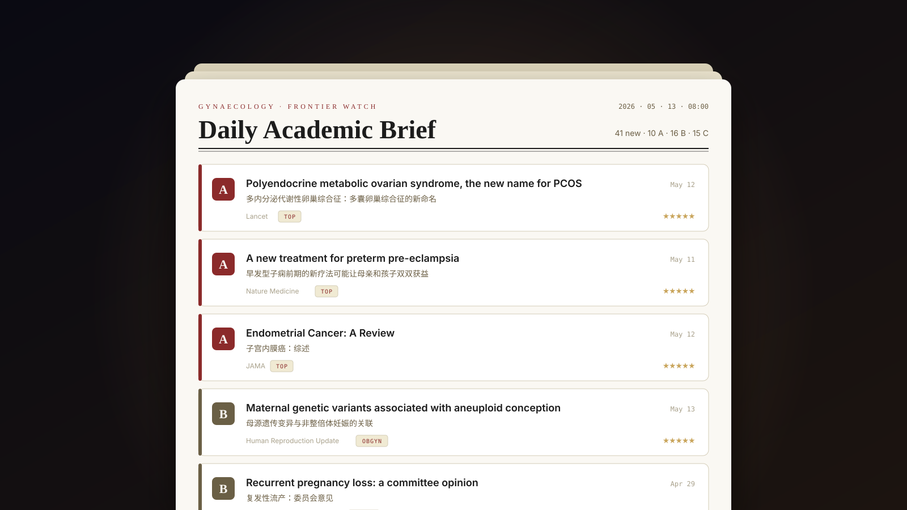

A daily literature radar, built for one medical researcher.

Keeping up with gynaecology research means scanning dozens of journals and society feeds daily. This pipeline does the scanning, grading and summarising — the researcher opens one dashboard and reads only what earned that attention.
A 51-journal whitelist route keeps the signal high — and a second route keyed on publication type catches guidelines and consensus statements wherever they're published, with a four-times-wider date window.
18 RSS feeds, 6 society sitemaps (FIGO, ACOG, ASRM, NICE, ESGO, ESMO) and 2 scraped guideline pages. The same story from eight outlets is clustered semantically — by text similarity, not URL — keeping only the best-ranked version.
Each paper gets an A/B/C grade (or is filtered out) and a structured Chinese reading card — core question, design, results, limitations, next steps and more. When the item is a guideline, the card switches to version-diff analysis: what actually changed.
Four tabs — latest papers, academic news, weekly picks, favourites — with folder-and-tag organisation synced server-side, and a rotating top banner when something major lands. A scheduled job refreshes everything each morning at 8.
Two Python scripts, standard library only — no frameworks, no packages to rot. They fetch, Claude grades, flat JSON stores, a tiny server serves one HTML file. Tap a node to see why each piece is the way it is.
Click on any block in the diagram to see what it does and why I picked it.
A journal whitelist maximises precision but structurally misses the one category that matters most: guidelines get published anywhere. The fix is a second query keyed on publication type that bypasses the whitelist, gets a wider window, and a synthetic tier so impact-factor sorting can't bury it.
Cross-device favourites first synced through GitHub Gist — which meant pasting a token on every device and parking a research library with a third party. I replaced it with a server-side store: one endpoint, atomic writes, 30 days of dated snapshots. Cost: offline now degrades to local-only.
Each paper and news item is cached by its ID, written incrementally under a lock — a crash mid-run never loses paid analysis. A hard cap trims the list after tier-and-impact sorting, so the most valuable items are analysed first. The trade: changing a prompt means manually clearing caches.